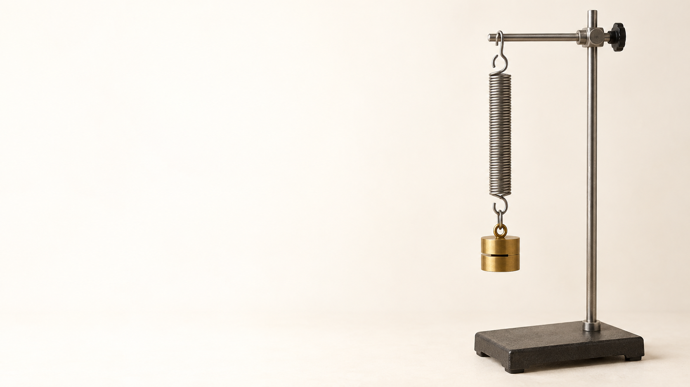

中1 理科・物理
力

中1 理科 力SeeD EDUCATION
形を変える
スポンジを押すとつぶれる
力のはたらき形を変える
中1 理科 力SeeD EDUCATION
運動のようすを変える
指で、一度だけ押す止まっていたボールが動き出す
指が離れたあとも動き続ける
中1 理科 力SeeD EDUCATION
物体を支える
落ちてきた木箱を机が受け止める
止まったあとも机が木箱を支える
中1 理科 力SeeD EDUCATION
力には、3つのはたらきがある
① スポンジを押す形を変える
② ボールを押す・止める運動のようすを変える
③ 机が物体を支える物体を支える
中1 理科 力SeeD EDUCATION
伸ばしたゴムが戻る。何の力？
手を離すと元の形に戻る
変化から考える何が、戻そうとした？
ゴムが元に戻ろうとする力弾性力
中1 理科 力SeeD EDUCATION
触っていないのに、なぜ落ちる？
手を離した物体は下に落ちる
何が引いている？地球が物体を引いている
地球が物体を引く力重力
中1 理科 力SeeD EDUCATION
下敷きに髪がつく。何の力？
こすった下敷きを近づける髪の毛が引き寄せられる
触れる前から引き合う力がはたらく
静電気による力電気の力
中1 理科 力SeeD EDUCATION
クリップが近づく。何の力？
磁石を近づけると鉄のクリップがくっつく
離れていても磁石が鉄を引き寄せる
磁石による力磁力
中1 理科 力SeeD EDUCATION
ボールが止まる。何の力？
床の上を動くボールだんだん遅くなり、止まる
動きを妨げたのは？床と接するところの力
接触面にはたらく力摩擦力
中1 理科 力SeeD EDUCATION
机の上で落ちない。何の力？
下向きに重力があるのに物体は落ちない
机から受けているのは？面が物体を押し返す力
面から垂直に受ける力垂直抗力
中1 理科 力SeeD EDUCATION
見えない力を、どう表す？
力そのものは見えない変化から、はたらきを知る
向きや大きさを伝えるために矢印で表そう
中1 理科 力SeeD EDUCATION
力を、矢印で表そう
矢印の始点作用点
矢印の向き力の向き
矢印の長さ力の大きさ
中1 理科 力SeeD EDUCATION
力の単位は、N
読み方ニュートン
地球上での目安100 gの物体の重さ ≒ 1 N
この教材の計算では100 gにつき1 Nとする
中1 理科 力SeeD EDUCATION
右向きに3 Nの力をかこう
1目盛りを1 Nとする始点から右へ3目盛り
矢印の先は3 Nの位置
中1 理科 力SeeD EDUCATION
ばねに、おもりをつるす
何もつるさないとき元の長さを測る
おもりをつるすとばねが伸びる
中1 理科 力SeeD EDUCATION
「長さ」と「伸び」は違う
何もつるさない長さ10 cm
つるしたあとの長さ12 cm
ばねの伸び12 − 10 ＝ 2 cm
中1 理科 力SeeD EDUCATION
力を増やすと、伸びは？
1 Nで2 cm伸びる
2 Nで4 cm伸びる
3 Nで6 cm伸びる
中1 理科 力SeeD EDUCATION
力と伸びを、点で表す
横軸と縦軸力［N］と伸び［cm］
測定した点を結ぶと原点を通る直線
2倍・3倍の力で伸びも2倍・3倍
中1 理科 力SeeD EDUCATION
ばねの伸びは、力に比例する
同じばねで比べる力が2倍なら、伸びも2倍
この関係をフックの法則
成り立つのは伸ばしすぎない範囲
中1 理科 力SeeD EDUCATION
2 Nを加えたときの長さは？
元の長さ10 cm・1 Nで2 cm伸びる2 Nなら、伸びは4 cm
ばね全体の長さ10 ＋ 4 ＝ 14 cm
中1 理科 力SeeD EDUCATION
5 cm伸ばすには、何N？
1 Nで2 cm伸びるばね2 cm・・・1 N
5 cmなら5 cm・・・2.5 N
中1 理科 力SeeD EDUCATION
「重さ」と「質量」を分けよう
質量物体そのものの量［g・kg］
重さ物体にはたらく重力［N］
中1 理科 力SeeD EDUCATION
月へ持っていくと？
同じ物体なら質量は変わらない
月での重さは地球の約6分の1
中1 理科 力SeeD EDUCATION
左右から引いても、動かない
同じ木片を左右から引くどちらも2 N
静止したままなら2力がつり合っている
中1 理科 力SeeD EDUCATION
2力がつり合う、3つの条件
同じ物体にはたらく2力が一直線上にある
向きは反対向き
大きさは等しい
中1 理科 力SeeD EDUCATION
右の力が、大きくなると？
左2 N・右3 Nつり合わない
止まっていた木片は右へ動き出す
中1 理科 力SeeD EDUCATION
机の上の物体にはたらく力
地球から受ける力下向きの重力
机から受ける力上向きの垂直抗力
この2力がつり合っている
中1 理科 力SeeD EDUCATION
300 gの物体を、机で支える
100 gにつき1 Nとする重力は下向きに3 N
静止しているので垂直抗力は上向きに3 N
中1 理科 力SeeD EDUCATION
ばねの問題は、二つに分ける
① どれだけの力？支えている物体から考える
② どれだけ伸びる？力と伸びの比例を使う
中1 理科 力・ばねの応用SeeD EDUCATION
直列｜それぞれのばねには何N？
200 gのおもりの重力2 N
ばねA・Bが伝える力A：2 N B：2 N
2本つないでも力を半分にはしない
中1 理科 力・ばねの応用SeeD EDUCATION
並列｜同じばね2本で支える
おもりを支える力の合計2 N
同じばね・左右対称ならA：1 N B：1 N
考え方1 N ＋ 1 N ＝ 2 N
中1 理科 力・ばねの応用SeeD EDUCATION
両側から2 Nずつ。4 Nになる？
左右は同じ大きさでつり合う合力は0 N
ばねを引く力の大きさ片側につき2 N
伸びは片側固定で2 Nと同じ
中1 理科 力・ばねの応用SeeD EDUCATION
壁も、反対側を引いている
200 gのおもりが引く力2 N
壁がばねを引く力反対向きに2 N
ばねにかかる力両側のおもりの例と同じ
中1 理科 力・ばねの応用SeeD EDUCATION
途中に100 g。上と下は同じ？
下のばねBは200 gを支えるB：2 N
上のばねAは合計300 gを支えるA：3 N
判断する手がかりそのばねより下の物体
中1 理科 力・ばねの応用SeeD EDUCATION
自力①｜直列で300 gを支える
おもりの重力3 N
ばねA・Bにかかる力A：3 N B：3 N
中1 理科 力・ばねの応用SeeD EDUCATION
自力②｜同じばね2本で500 g
支える力の合計5 N
等しく分担するとA：2.5 N B：2.5 N
中1 理科 力・ばねの応用SeeD EDUCATION
自力③｜両側に400 gずつ
片側のおもりの重力4 N
ばねにかかる力4 N（8 Nではない）
中1 理科 力・ばねの応用SeeD EDUCATION
自力④｜片側固定、600 g
おもりの重力6 N
ばねにかかる力6 N
中1 理科 力・ばねの応用SeeD EDUCATION
2 Nで1 cm。500 gなら？
質量を力に直す500 g → 5 N
1 cmあたり2 Nなので5 ÷ 2 ＝ 2.5 cm
中1 理科 力・ばねの応用SeeD EDUCATION
5.5 cm伸びた。おもりは何g？
伸びから力を求める5.5 × 2 ＝ 11 N
力を質量に直す11 × 100 ＝ 1100 g
中1 理科 力・ばねの応用SeeD EDUCATION
自力｜1.5 Nで1 cm伸びるばね
① 450 gなら、何cm伸びる？4.5 ÷ 1.5 ＝ 3 cm
② 5 cm伸びたら、何g？5 × 1.5 ＝ 7.5 N → 750 g
中1 理科 力・ばねの応用SeeD EDUCATION
全長12.5 cmを、そのまま使わない
元の長さ10 cm、全長12.5 cm伸びは12.5 − 10 ＝ 2.5 cm
1 Nで2.5 cm伸びるので1 cmあたり1 ÷ 2.5 ＝ 0.4 N
中1 理科 力・ばねの応用SeeD EDUCATION
伸びと全長を、行き来しよう
① 1.2 Nで何cm伸びる？1.2 ÷ 0.4 ＝ 3 cm
② 全長15 cmにする力は？(15 − 10) × 0.4 ＝ 2 N
③ 3 Nなら全長は？10 ＋ 3 ÷ 0.4 ＝ 17.5 cm
中1 理科 力・ばねの応用SeeD EDUCATION
自力｜8 cmのばねが13 cmに
500 gで全長13 cmになった力5 N、伸び5 cm
① 1 cm伸ばす力は？5 ÷ 5 ＝ 1 N
② 250 gなら何cm伸びる？2.5 ÷ 1 ＝ 2.5 cm
中1 理科 力・ばねの応用SeeD EDUCATION
自力｜全長と質量を求める
③ 全長11 cmなら何g？(11 − 8) × 1 ＝ 3 N → 300 g
④ 350 gなら全長は何cm？8 ＋ 3.5 ÷ 1 ＝ 11.5 cm
中1 理科 力・ばねの応用SeeD EDUCATION
ばねの応用で、できるようになること
図を見て直列・並列・両端の力を判断
計算するときg → N → 伸びの順に整理
最後に確かめる「伸び」と「全長」を区別
中1 理科 力・ばねの応用SeeD EDUCATION
見えない力を、図で考えよう
力のはたらき変形・運動の変化・支持
力の表し方作用点・向き・大きさ
ばねとつり合い比例と、2力の3条件
中1 理科 力SeeD EDUCATION